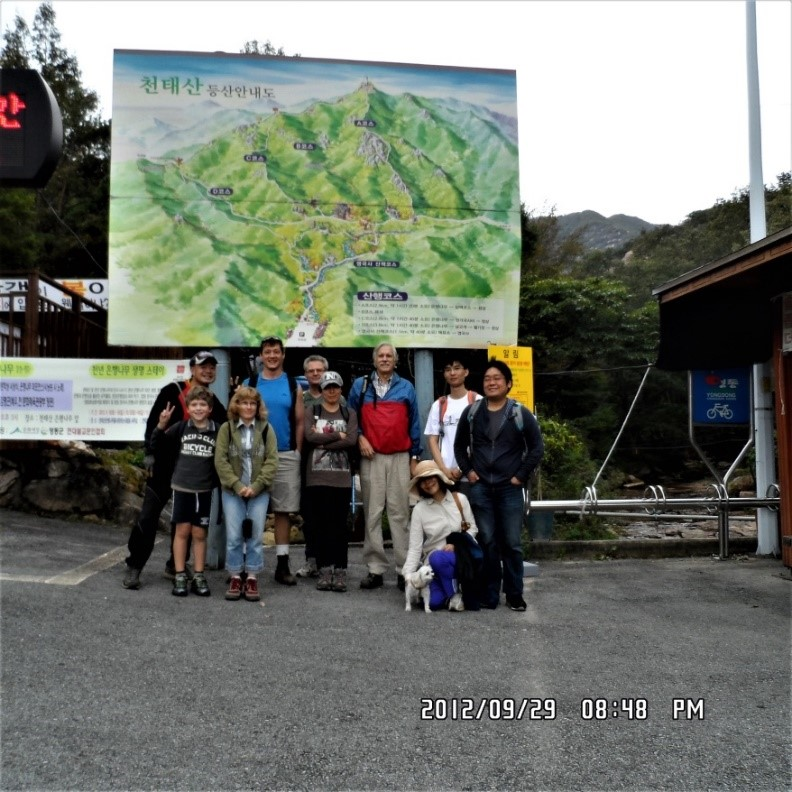
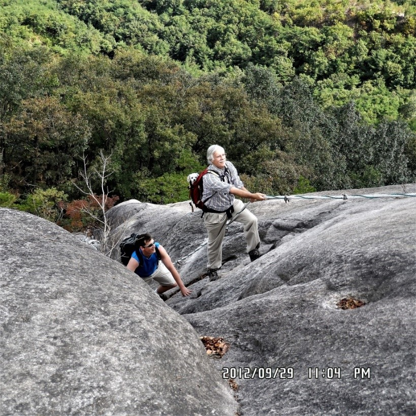
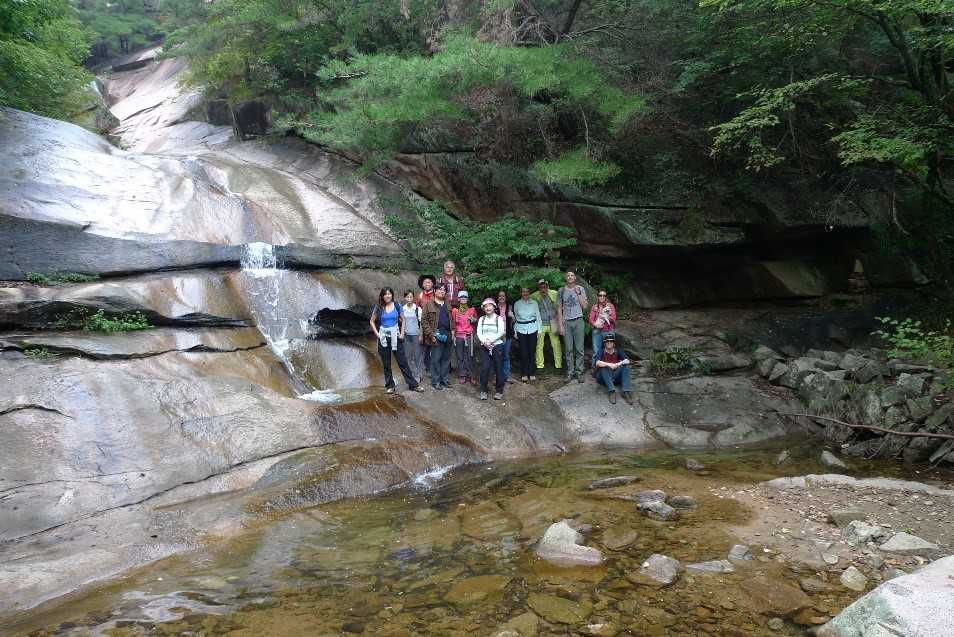

Which course to choose?

We met at KAIST at 10:00. It took about 45 minutes to arrive at the base of the mountain. I will describe the scenic route
from KAIST. Take Rt. 25 to 300E to the exit of Rt.35 south to exit for GumSan. Then take Rt.68 East to Rt.501 North to the
exit for YeongGukSa (영국사) temple. After parking we headed up the Ambyeok (암벽코스) course or A course, a 2.9 Km long hike with
a moderate grade and about half way up has a very steep pitch with ropes for assistance. There are 4 courses available
labelled as A-D. The map in the parking lot will tell you how long each course takes. We arrived at viewpoints at 12:48 p.m.
and ate lunch there. After lunch we hiked further and reached steep pitches at 14:00 p.m. and arrived at the top at 15:34
p.m. For the way down we travelled using the NamgoGaygil (남고개길) trail which is 3.9 Km long with viewpoints at 15:53 p.m. and
arrived at YeongGukSa (영국사) at 17:06 p.m. We left the parking lot soon after and arrived at KAIST at 18:00.
Climbing the rock face

This was a very good hike with good views at along the trail. It also had a few steep pitches but there were ropes to assist
at these locations that made it very safe and fun in those areas. There is also a path that avoids the scramble up the rock
face using the ropes. This trail is to the right and is marked. You can choose which route to take. If you are nervous about
scrambling up a steep rock face, you can go around this and arrive at the same location as those who climb the rock face
(but it is not nearly as much fun). I have done both and enjoy the challenge of the ropes but then I have had extensive
experience with rock climbing. I even did this with our dog BB in my pack and our youngest hiker Pablo at 11 years old
relished the challenge as well. I recommend this hike for those who wish to go on a hike that is not too strenuous.
Other attractions not to be missed

There are several reasons to climb this mountain aside from the thrill of rock climbing and the magnificent view from the
top. Also worth visiting on the way to the top is the Yeongguksa (영국사) temple. There is a colorful outdoor display on a wall
of dozens of Buddhist dolls, as well as Korean treasure no. 533 which is a 3 storied stone Pagoda built during the Shilla
period in Korean history. From the parking lot it is only a 20 minute (1.1km) walk to reach the temple. On the way to the
temple you will not be able to miss the 은행나무 or in English the Ginkgo tree. This tree soars 31 meters high with an 11 meter
diameter and is said to be 1000 years old. Legend has it that during times of national crisis the tree wails for the people
of Korea. During our visit the only sound was the soft rustling of tree leaves so I guess all was well in the country of
Korea. Lastly, but certainly not to be missed, especially on a warm day are two waterfalls where our group posed for a cool
photo. The names of the waterfalls are 진주폭포 and 삼단폭포 which roughly translates to Jinjupokpo and Samdanpokpo, with pokpo
being the Korean word for “waterfall”.